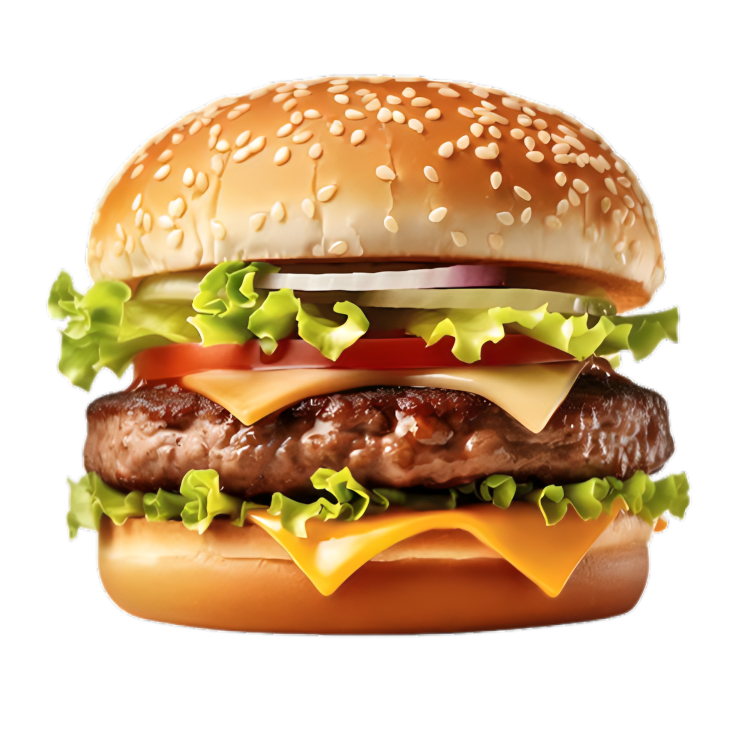
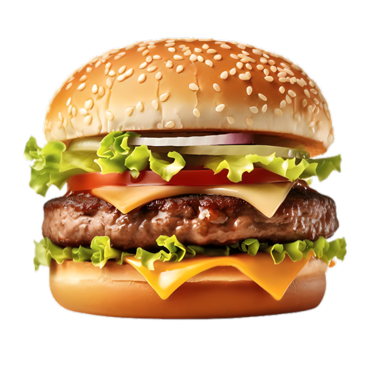

IMPOSSIBLETM
WHOPPER
100% WHOPPER®
0% BEEF  
0% BEEF  
Palty made from planta and cooked on the same broiler as beef patties.Contains mayo.
See burgerking.ca for more info on ingreidents and allergens.AT PARTICIPATING RESTAURAUNTS IN INDIA
TM and & © 2024 BURGERKING CORPORATION. UESD UNDER LICENCE ALL RIGHTS RESERVED. Impossible is a trademark of impposible foods. Used under licence.